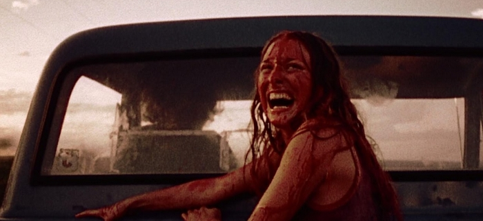

O massacre da serra elétrica 1974


Essa franquia se tornou muito famosa no genêro terror e o slasher. Contudo, essa história é inspirada em uma bem pior que foi real.
O filme foi escrito e dirigido por Toobe Hooper e Kim Henkel, um cara sem experiência. O seu trabalho foi lançado no dia 1 de outubro de 1974, porém, no Brasil só foi lançado no ano de 1987. O site focará no enredo desse filme e será abordado algumas curiosidades em relação a esse filme.
Inspiração
Ed Gein teve uma infância problemática e repleta de dramas familiares, assim como o assassino Leatherface. Com uma mãe extremamente católica e um pai ausente, Ed passou a conhecer o mundo a partir do olhar de sofrimento, e isso impactou diretamente em suas concepções e nos relacionamentos com outras pessoas. Foi então que, a partir de 1940, com a morte sequencial de seus pais e irmão, ele desenvolveu interesse pela morte e ocultismo, passando a tratar a vida como um playground de experimentos bizarros.
Agora sozinho, Ed passou a praticar crimes hediondos e foi um dos principais ladrões de túmulos, ele resgatava pedaços de corpos degradados para guardar como souvenir e realizando assassinatos em locais suspeitos, mesmo só tendo sido legalmente relacionado a duas mortes. Durante as investigações, o que mais chocou às autoridades foram as "lembranças" escondidas na casa do serial killer, que registraram centenas de ossos, crânios, máscaras de peles, narizes, corações e muito mais.
Após ser capturado e ser considerado mentalmente incapaz, Ed Gein foi levado para um hospital psiquiátrico, onde passou a vida internado. Em 26 de julho de 1984, ele morreu de uma parada cardíaca decorrente de um câncer.
Enredo
Após tomar conhecimento, pelo rádio, de que atos de vandalismo estão sendo cometidos em um cemitério no Texas, Sally Hardesty e seu irmão paraplégico Franklin decidem ir até o local para se certificarem de que o túmulo do avô não foi violado. Os irmãos, que viajam numa van, são acompanhados pelo namorado de Sally, Jerry, e pelo casal Kirk e Pam. Depois de verificarem que a tumba está intacta, eles param em um posto de gasolina, porém descobrem que não há combustível. Os jovens decidem seguir até à antiga casa dos Hardesty, mas são parados por um caroneiro, que fere Franklin com uma navalha e se corta a si mesmo, sendo imediatamente expulso da van.
Chegando à fazenda dos Hardesty, os jovens começam a examinar o lugar. Enquanto Kirk e Pam procuram um lugar para nadar, escutam um gerador de energia em uma casa nas proximidades. O rapaz entra na casa para pedir combustível, mas é atacado com um martelo por um homem, Leatherface, que arrasta seu corpo para dentro de uma sala secreta e fecha a porta. Pam, em busca de seu namorado, entra na residência e descobre numerosos ossos e galinhas presos a uma gaiola, começa a vomitar e foge. Leatherface a captura e a pendura num gancho de carne; em seguida, liga a motosserra e corta Kirk. Sally, Franklin e Jerry começam a se preocupar com a ausência do casal, e então este último sai à procura do casal. Depois de alguns minutos, ele encontra Pam dentro de uma câmara frigorífica. Leatherface aparece com uma marreta e o acerta na cabeça, matando-o. Leatherface coloca o corpo da moça de volta na câmara e começa a se sentir atormentado pelo fato de invadirem sua casa.
Ao anoitecer, Sally e Franklin decidem descansar. Pela madrugada, ambos saem à procura de Jerry, Kirk e Pam na floresta. Logo após ouvirem barulhos, Leatherface ataca Franklin com a motosserra e o mata. Sally escapa pela floresta, entra na casa de Leatherface e encontra um casal de idosos, os quais na verdade são apenas esqueletos. Leatherface destroça a porta por intermédio do instrumento e a jovem salta para fora da janela e foge em direção ao posto de gasolina, onde pede ajuda ao proprietário. Depois de tentar acalmá-la, o homem traz um saco e uma corda de sua caminhonete. Sally então percebe que ele está mancomunado com o assassino e tenta fugir, mas é capturada e levada para a casa onde seus amigos foram mortos. No local, ela descobre que tanto o proprietário do posto de gasolina quanto o caroneiro são irmãos de Leatherface. A jovem é amarrada a uma cadeira, e o avô, que pratica canibalismo, tenta assassiná-la com um martelo, mas falha várias vezes por conta do definhamento.
Quando os membros da família começam a discutir, Sally se liberta e escapa pulando de uma janela. Os dois irmãos (Leatherface e o caroneiro) tentam alcançá-la; contudo, chegam em uma estrada, onde aparece um caminhão que atropela o caroneiro. O motorista desce para ajudar a moça, mas Leatherface os persegue com sua motosserra.
Em seguida, aparece uma caminhonete, Sally monta na carroceria do veículo e escapa, ao passo que Leatherface, furioso, dança maniacamente girando a motosserra no ar.
A cena icônica
Com a fuga de Sally, Leatherface fica aflito e começa a "dançar". Com essa fuga, serviu de gancho para uma sequência para o 2º filme, porém, ele não vem ao caso aqui.